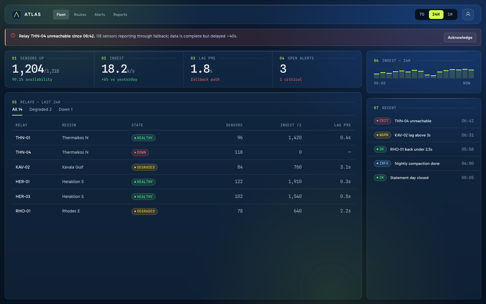
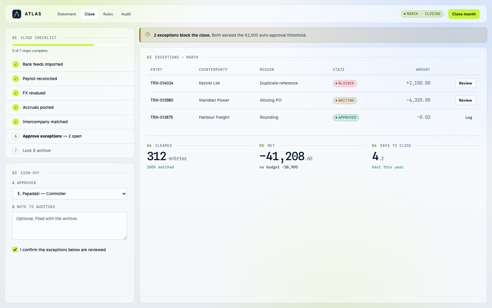
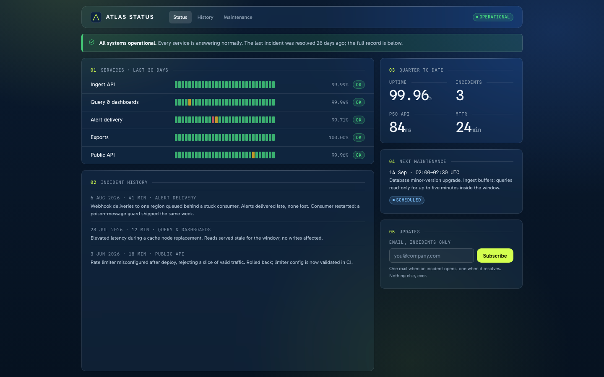

ATLAS DESIGN LANGUAGE · SECOND EDITION · SEPTEMBER 2026
ATLAS
A dense, glass-based interface system in two
themes. Rounded glass over navy light, one chartreuse for every action, 10px tracked
labels against 46px tabular figures.
TOKEN LAYERS2
THEMES2
CONTRAST PAIRS GATED34
ELEVATION LEVELS4
CASE SCREENS3
ATLAS — Design LanguagePlaceholder product data throughout
00 CONTENTS
What this book holds
01Philosophy — the three devices, the two laws03 — 04
02The mark05
03Colour — dark, light, the accent, the proof06 — 09
04Typography — faces, the scale, numerics10 — 11
05Iconography12
06Grid, breakpoints, density, geometry13 — 15
07Glass & elevation — depth without shadow16 — 17
08Data colour & attention18 — 19
09Components & the behavior contract20 — 22
10In use, and skinning another product23 — 24
ATLAS is a product interface system, not a brand — there is no photography and no
logotype beyond the mark. Its character lives in three structural devices: the index
label, the glass panel, and the rule. Everything else in this book is the discipline
that keeps those three working at 12–14px, all day, in both themes.
Two laws sit above everything. Components are built from the semantic token
layer only — any raw hex in the component layer is a bug. And every measured claim
is enforced: tools/check_contrast.py re-measures all 34
declared colour pairs in both themes on every run.
The book compresses; the repository is the authority.
showcase.html, components.html and
foundations.html carry every rule here as a working,
theme-switchable page.
ATLAS — Design Language02
01 PHILOSOPHY
The three devices
01 THE INDEX LABEL
A 10px tracked mono label with a
numbered accent prefix and a hairline running to the end of the column. Every block of
content opens with one — it is the system's table of contents, printed in place.
04.2 RECONCILIATION
B APPROVER
02 GLASS
Panels are translucent white
(5.5–12.5%) over the navy with an 18px blur, 30px on the app frame. A 1px gradient
sheen along the top edge stands in for elevation; nothing casts a shadow downward.
There is no box-shadow in the system except the
accent glow on a hovered primary button.
03 THE RULE
Ingest48,210
Query31,884
Exports2,051
Inside glass, content separates with
hairlines, never with nested cards. Figures sit in one divided panel, not separate
tiles.
Tables are the primary surface, with an accent-tint hover instead of striping. The
system is dense on purpose: 12–14px carries the interface, and nothing is inflated to a
comfortable-looking 16px — a data product earns trust by showing more, legibly.
Three things were inherited from the reference system and everything visual is new:
the density, the 1.75px base grid, and mono numerics for every figure, reference and
identifier. The ice-blue, the cyan primary, the rounded chrome — all dropped.
ATLAS — Design Language · Philosophy03
01 PHILOSOPHY
Two layers, and the split is load-bearing
1 PRIMITIVES · PER THEME
Raw values, declared per theme —
--navy-900, --lime-400,
--slate-300. Never referenced by a component.
↓
2 SEMANTIC · THE ONLY LAYER COMPONENTS USE
--ground ·
--surface · --border ·
--text-primary · --fill-accent ·
--tint-success — role names that survive the theme flip.
↓
3 COMPONENTS · components.css
Buttons, fields, selection, tags,
the ledger table, tabs, segmented, dialog, flags, readouts, empty states. Any hex
here is a bug; the same markup flips themes untouched.
Why the split is lawA component that reaches past the semantic layer breaks
when the theme flips. That is not hypothetical — it is what happened to the accent
before it was split into --fill-accent and
--text-accent.
Aliases are pointersShort aliases (--ink,
--ac, --glass) keep older markup
working; every one is a pointer, never a value. New work uses the semantic names.
Machine-readabletokens.json carries every token —
colors, dimensions, durations, aliases as references — generated from
tokens.css by tools/build_tokens.py.
Edit the CSS, regenerate, never edit the JSON.
Enforcedtools/check_contrast.py re-measures all 34
declared role pairs in both themes on every run and exits non-zero under the bar.
ATLAS — Design Language · Philosophy04
02 IDENTITY
The mark is the system drawn small
ATLAS
64 · HERO
34 · TOPBAR
20 · DENSE
16 · FAVICON
ConstructionA raised-navy tile at the frame radius (14px), three contour
hairlines, and one chartreuse peak whose crossbar is the contour it crosses — the
index label, the rule and the accent, drawn once.
Two filesmark.svg is self-coloured and works on
any ground; mark-mono.svg is currentColor and inline-only —
it never ships as a standalone asset.
The lockupMark plus ATLAS in Gabarito 700 tracked 0.14em, the mark at cap
height × 1.9. The mark never appears without the name except as a favicon.
GroundsThe tile carries its own navy, so the mark holds on dark, light, and
any product surface — it is never recoloured to match a theme.
ATLAS — Design Language · Identity05
03 COLOUR
Dark — the theme it was designed in
ground
#0A1A2F
ground-deep
#061220
ground-raised · solid
#0E2440
surface · glass 5.5%
WHITE 5.5%
surface-hover · 8.5%
WHITE 8.5%
border · 17%
WHITE 17%
text-primary
#EEF3F8 · 15.7:1
text-secondary
#A9BACB · 8.8:1
text-tertiary · labels
#8698AC · 5.9:1
placeholder
#74889D · 4.8:1
fill-accent · text-accent
#D4FF4F · 15.2:1
text-on-accent
#1B2405 · 14.0:1
A STATUS — TEXT · TINT · BORDER, IN THAT ORDER
OK · 10.0:1WARN · 10.5:1DANGER · 6.3:1INFO · 9.4:1ACCENT
Each status is three tokens — a text
tone, a background tint at 13%, a border at 34% — so a tag, a flag and a plain line of
status text all derive from one family.
The blooms behind the glass raise background luminance under
the text, so every ratio above keeps headroom beyond its bar. All four text roles clear
AA for normal text at 10px — the size the signature labels actually run at.
ATLAS — Design Language · Colour06
03 COLOUR
Light — a remap, not an inversion
ground
#F2F5F8
ground-deep
#E7ECF1
ground-raised · solid
#FFFFFF
surface · frosted 58%
WHITE 58%
border · navy 16%
NAVY 16%
fill-accent
#C9F53C
text-primary
#0D1A26 · 16.1:1
text-secondary
#46596A · 6.6:1
text-tertiary · labels
#56697E · 5.2:1
placeholder
#596B80 · 5.0:1
text-accent · deep lime
#4A6606 · 6.0:1
text-on-accent
#1B2405 · 12.8:1
Hairlines invertOn dark, lines are white at 10–26%; white-on-white has no
edge, so on light they become navy at 10–26%.
Glass opacity climbs an order of magnitude5.5% white over pale grey reads as
nothing; light glass sits at 52–90% — frosted rather than tinted — and a light panel
needs its hairline to define the edge.
Status re-derivesSuccess drops to #10794B (5.0:1), warning to #8A5B04
(5.4:1), danger to #C0271F (5.4:1) — the first pass failed at 4.35:1 and below, and
the gate now keeps it from regressing.
The boundary ruleThe accent fill alone measures 1.16:1 against this ground,
so the primary button's boundary is carried by
--border-accent in both themes.
ATLAS — Design Language · Colour07
03 COLOUR
One chartreuse, split in two
A FILL — BACKGROUNDS, DARK INK ON TOP
CLOSING
--fill-accent
works as a fill in both themes — dark ink on it measures 14.0:1 dark, 12.8:1
light.
B TEXT — TYPE, ICONS, THE INDEX PREFIX
The index prefix
04.2, a
link like this one, an accent icon — all take
--text-accent: chartreuse itself on dark (15.2:1), deep
lime on light (6.0:1). Chartreuse as type on a pale ground is 1.3:1 — the token
split exists because that failure shipped once.
They are not interchangeableAnything colouring type uses
--text-accent, never --fill-accent.
The one exception is ink sitting on the fill, which uses
--text-on-accent.
One accent, everywhereEvery action, link, active state, selected tab, focus
ring and series-1 chart line is the same chartreuse family. A second accent hue is not
a customisation — it is a different product (page 24).
The accent is the attention budgetOne flagged item, one primary button per
view. Spending chartreuse twice halves what both purchases bought.
Focus2px chartreuse outline at 2px offset on every interactive element,
following the element's own radius; light theme deepens it to lime-800 (7.2:1).
ATLAS — Design Language · Colour08
03 COLOUR
Proof — every role pair, measured, both themes
Pair · vs ground
Dark
Light
Bar
text-primary
15.65
16.09
4.5
text-secondary
8.80
6.62
4.5
text-tertiary — the 10px labels
5.91
5.16
4.5
text-placeholder
4.79
5.00
4.5
text-accent
15.16
6.01
4.5
text-on-accent · vs fill
14.00
12.77
4.5
text-success
10.03
4.97
4.5
text-warning
10.47
5.36
4.5
text-danger
6.30
5.40
4.5
text-info
9.36
7.01
4.5
Pair · vs ground
Dark
Light
Bar
viz-1
15.16
3.45
3.0
viz-2
9.36
7.01
3.0
viz-3
7.63
4.52
3.0
viz-4
8.76
5.42
3.0
viz-5
10.89
4.57
3.0
viz-6
10.47
5.36
3.0
focus-ring
15.16
7.19
3.0
Thirty-four pairs, WCAG 2.x relative
luminance, re-measured by tools/check_contrast.py on every
run — the table above is the gate's own output, not a claim. Motion honours
prefers-reduced-motion (both durations collapse to 1ms);
forced-colors mode goes solid and hands the palette to the system; touch targets floor
at 44px.
ATLAS — Design Language · Colour09
04 TYPOGRAPHY
The jump is the character
A SPLINE SANS MONO · THE NUMBERS
48,210
PB-2216 MARCH · RECONCILED
Everything numeric — figures,
references, identifiers — is Spline Sans Mono, tabular, tracked −0.02em. The system's
character is the jump between 10px tracked labels and 46px tabular figures, with very
little in between.
−1,240.0099.96%TRX-014021
B GABARITO · THE INTERFACE
Close the month with the numbers shown
Gabarito carries headings, body and
controls at 12–14px. Weights 400–700; tight tracking (−0.03em) on display sizes, 0.1em
on the 10px labels. Sentence case everywhere except the labels, which are always
uppercase and always mono.
Labels are mono, headings are notThe two faces never trade jobs: Gabarito
never sets a figure, Spline never sets a sentence.
No third faceIcons are the only other glyph system on a surface.
ATLAS — Design Language · Typography10
04 TYPOGRAPHY
The scale, all ten steps
461,204,118HERO READOUT
33Page heading
25Section heading · dense KPI
19Panel heading
16Standfirst — the largest body size
14Large control text, comfortable body
13The working size — tables, controls, body. Most of the interface is this line.
12Dense controls, nav items, secondary cells
11Help text, KPI deltas, legends
10THE INDEX LABEL — THE SYSTEM'S SIGNATURE, AND WHY EVERY TEXT ROLE CLEARS AA AT 10PX
10 / 11 / 12 / 13 / 14 / 16 / 19 / 25 / 33 / 46. Density never
changes type — .a-dense tightens spacing and control heights and
leaves every size above exactly where it is.
ATLAS — Design Language · Typography11
05 ICONOGRAPHY
Phosphor, regular, and six rules
14
16
20
24
The icon repeats the copy. Severity is in the words, never only in the glyph or the colour.
1Regular weight onlyNever mixed with bold, fill or duotone — the mix
is the fastest way to make an icon set look borrowed.
2Sized in em.a-icon sets 1.15em so a glyph
tracks the label beside it; standalone sizes are 14 / 16 / 20 / 24px.
3currentColorAn icon takes the colour of the text it sits with,
never its own.
5Never the sole carrierA state is a tint plus a word; icons in a flag
repeat what the copy already says.
6No emojiAnywhere. The system's warmth is chartreuse, not 🎉.
ATLAS — Design Language · Iconography12
06 GRID
Twelve columns, four breakpoints
A THE CANONICAL SPLITS
SPAN 8 — PRIMARY
SPAN 4
3
3
3
3
Twelve columns, gutter
--sp-4 (14px — the grid's own unit, ×8). Reading surfaces cap
at 1060px; application shells run to 1440px and stop — a ledger wider than 1440 stops
being scannable. A 6/6 split is a smell: usually two views pretending to be one.
B BREAKPOINTS
From
Name
What changes
0
Stack
One column. Side panels become sections below; tables shed to three columns: identity, state, figure.
768
Split
Two columns. The 8/4 split arrives; KPI rows go 2×2.
1060
Full
The twelve-column grid, KPI rows in one line, side rail visible.
1440
Cap
Nothing new appears — margins absorb the rest. Density, not width, is how ATLAS scales up.
ATLAS — Design Language · Grid13
06 DENSITY
One switch, on the region
A COMFORTABLE — DEFAULT
Entry
State
Amount
TRX-014021
Settled
−1,240.00
TRX-014022
Pending
−96.20
TRX-014023
Settled
−18,400.00
B DENSE — .a-dense ON THE REGION
Entry
State
Amount
TRX-014021
Settled
−1,240.00
TRX-014022
Pending
−96.20
TRX-014023
Settled
−18,400.00
TRX-014024
Settled
−512.75
One switch, applied to a region, never to a single control. Dense drops row padding
one step and controls to 28px. Type sizes never change — density is spacing, not
shrinking; a screen that needs smaller type needs a different screen.
Dense is for pointer surfaces; the 44px touch floor makes it unavailable on touch.
Control heights run 28 / 34 / 42px, and the 34px default is itself a pointer-surface
number.
ATLAS — Design Language · Density14
06 GEOMETRY
The 1.75px unit, radii 6 / 10 / 14
A SPACE
3.5
7
10.5
14 · the gutter
21 · panel pad
28
42
56
84
A 1.75px base unit instead of 4 or 8.
Invisible, unusual, and it works.
B RADII
6
10
14
pill
Inner elements 6, panels and controls
10, the app frame 14. Pill is reserved for tags, progress tracks and avatars — a
pill-shaped button is a different design system.
C MOTION
90ms
micro — hover, press, focus, toggle. Below perception as animation; reads as response.
cubic-bezier(0.2, 0, 0, 1) — fast out, long settle. Variety of easing is how motion systems rot.
1ms
reduced motion collapses both. Nothing depends on seeing the transition.
ATLAS — Design Language · Geometry15
07 GLASS
Depth without a single shadow
01 A PANEL OVER LIGHT
The blur needs light behind it —
body::before paints the blooms, and a glass panel dropped
onto a flat fill reads as grey mush.
UPTIME99.96%
P5084ms
A ELEVATION — FOUR LEVELS, LIGHT DOES THE WORK
0
ground-deep — the page behind everything
1
glass — panels, 18px blur
2
glass-lg — the app frame, 30px blur
3
solid — dialogs and menus, opaque, readable over anything
Each level catches more of the
top-edge sheen; none casts anything downward. There is no level 4 — anything
above a dialog is a design error.
ATLAS — Design Language · Glass16
07 GLASS
The caveats are part of the spec
The budget is a numberSix simultaneously visible blurred panels per view,
the app frame counted once. Blur is GPU work; beyond six, group content under one
panel with hairlines rather than adding panels.
The one forbidden thingGlass never nests inside glass. Controls that live
inside a glass panel — the theme toggle, the segmented control — are solid
(--ground-deep), which is why the segmented control looks
the way it does.
The fragile themeLight glass has far less contrast against its ground than
tinted white has against navy — a light panel needs its hairline to define the
edge.
No backdrop-filter@supports raises the fill to
--surface-active, trading translucency for legibility.
Forced colorsWindows High Contrast gets no translucency at all: blooms off,
glass solid to Canvas, borders to
CanvasText — the 1px borders every panel already carries are
what keeps the structure legible.
PrintBlur does not print. Paper surfaces use the solid register — this
book's own pages are the demonstration: every panel above sits on an opaque bloom
render, not a live blur.
ATLAS — Design Language · Glass17
08 DATA COLOUR
Six series, re-derived per theme
A DARK — ALL ≥ 3:1 ON THE GROUND
1 · accent
2
3
4
5
6
B LIGHT — SAME SIX JOBS
1 · accent
2
3
4
5
6
IngestQueryExports
Order is fixedSeries 1 is always the accent, and a chart never reorders the
palette to look nicer — a colour means the same series everywhere in a product.
Past six, aggregateA seventh series is a table, not a line.
Colour is never the only carrierA legend names every series; lines differ
in weight as well as hue; trend direction pairs the colour with a sign.
The grid is quiet--viz-grid is white or navy at
8–9% — reference lines never compete with data.
ATLAS — Design Language · Data colour18
08 ATTENTION
One signal per view, and the quiet states
RG-2214 over threshold. Flow 312 m³/h against a ceiling of 300. Acknowledge or reassign.
One flagged item, one primary button
per view. When everything is highlighted, nothing is — the danger flag above only
works because it is the only red on the page. A flag inserted in response to an action
carries role="status" or
role="alert" so it is announced, not just painted.
41 NOMINAL2 DRIFTING1 OVER
B THE FOUR EMPTY STATES — HAIRLINE SLATE, ONE CHARTREUSE ACCENT
no entriesno resultsfeed interruptedfirst run
ATLAS — Design Language · Attention19
09 COMPONENTS
Actions, fields, selection
A BUTTONS · DEFAULT / PRIMARY / DANGER / GHOST · SM / MD / LG
B FIELDS · LABEL, HELP, INVALID
Above the licensed ceiling of 250.00 — lower it or attach a variance.
C SELECTION
A button is a buttonNative <button>, never a
styled div — Space and Enter come free and stay free. Icon-only buttons carry
aria-label.
Invalid is an attributeThe stylesheet keys the danger border and tint to
aria-invalid="true" — never to a class — and the error line
is wired in with aria-describedby. The error says how to fix
it.
State lives in :checkedSelection controls are native inputs inside their
labels; the label text is the accessible name; radios arrow-key within their
name group; the switch carries
role="switch".
The numeric field.a-input--num is mono, tabular
and right-aligned — a figure is a figure even while it is being typed.
ATLAS — Design Language · Components20
09 COMPONENTS
The ledger, tabs, dialog, readouts
A THE LEDGER TABLE — THE PRIMARY SURFACE
Entry
Counterparty
State
Amount
TRX-014021
Meridian Freight
Settled
−1,240.00
TRX-014022
Harbour Utilities
Pending
−96.20
TRX-014023
Aegis Payroll
Settled
−18,400.00
B TABS & SEGMENTED
Void entry TRX-014022?
The entry is reversed, the counterparty notified, and the audit trail keeps both
sides. This cannot be undone.
role="group" + aria-pressed; one pressed at all times
Space · Enter
Dialog
role="dialog" · aria-modal · aria-labelledby; focus trapped, returned to opener
Esc · Tab cycles
Flag
role="status" (ok/info) · role="alert" (danger) when inserted
—
Table
th[scope]; sort buttons inside th with aria-sort
Space · Enter
Nav
<nav> + aria-current="page"
—
Progress
role="progressbar" + value min/max/now
—
ATLAS ships as CSS, so the markup and the keyboard are the implementer's to build —
but not the implementer's to design. docs/BEHAVIOR.md is the
contract, one section per interactive component, and the stylesheet keys its styling
to these attributes (aria-selected,
aria-pressed, aria-invalid,
aria-current) — markup that honors the contract renders
correctly for free, and markup that skips it renders visibly wrong, which is the
point.
Focus is never removed2px accent outline at 2px offset, on every
interactive element, following the element's own radius.
Tab leaves the tablistIt never walks the tabs; arrow keys do. A panel
with no focusable content carries tabindex="0".
The overlay click may close a dialog; it is never the only way outThe
footer always carries a real button.
ATLAS — Design Language · Behavior22
10 IN USE
Three products, one language

Ops console · a sensor fleet · dark

Month close · a finance product · light

Status page · a public surface · dark
Deliberately different products, every one composed from
components.css alone — no per-case stylesheet exists. The
console leans on the one-signal rule and the data series; the close leans on forms,
steps and the ledger; the status page leans on flags, uptime readouts and the solid
subscribe row.
Each case is also a proof of a specific claim: the console that the density scales,
the close that the same markup flips themes untouched, the status page that the language
holds on a public, low-chrome surface. A new case should stress a rule, not decorate
one.
ATLAS — Design Language · In use23
10 SKINNING
Making it another product's
Step
What changes
1
The accent trio — --lime-400 / 300 / 500 — becomes the new product's signal colour.
2
The ground pairs — --navy-900/950 dark, --pale-100/200 light.
3
--text-accent is re-derived for the new accent against both grounds — the fill almost never works as type.
4
python3 tools/check_contrast.py — all 34 pairs must clear before anything ships.
5
Nothing else. The semantic layer and every component follow untouched.
The case screens were built exactly
this way. If a reskin wants a second accent, new radii or a friendlier 16px body, it
does not want ATLAS — it wants a different system, and that is a fine thing to
want.
B THE PIPELINE
$ vi tokens.css
$ python3 tools/build_tokens.py
tokens.json regenerated
$ python3 tools/check_contrast.py
All 34 pairs clear. The gate is open.
Edit the CSS, regenerate the JSON,
run the gate. tokens.json feeds design tools and code-gen;
the gate keeps the measured claims on pages 6–9 true forever. Self-host Gabarito,
Spline Sans Mono and Phosphor before production — the CDN links are a development
convenience, not a dependency.
ATLAS — Design Language · Skinning24
This book is generated from the living system — tokens, components and cases in the
repository are the source of truth, and the contrast gate re-measures every colour claim
on each run. All product data shown is invented placeholder.
Repository: github.com/aposfys/atlas-design-system
Source: docs/book.html — regenerate the PDF from it after any token change.
Live pages: showcase.html · components.html · foundations.html — every rule here, working, with the theme toggle.
ATLAS — Design Language · Second editionSeptember 2026